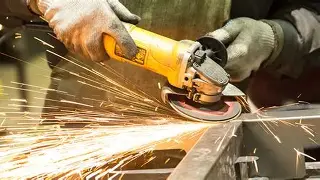

Segredos das esmerilhadeiras
Da mais simple até as mais complexa engenharia, essas ferramentas foram ganhando fama por todas as pessoas.
Da mais simple até as mais complexa engenharia, essas ferramentas foram ganhando fama por todas as pessoas.

Arquivo das Serras
As primeiras tentativas de criar discos de corte e desbaste usavam vidro e minerais prensados, longe dos compostos modernos de resina, óxido de alumínio e fibra de vidro super resistentes de hoje.
Uma esmerilhadeira compacta gira em média entre 10.000 e 12.000 RPM (rotações por minuto). Isso é cerca de 3 a 4 vezes mais rápido do que o motor de um carro comum em altas rotações!
Na Europa, muita gente chama a esmerilhadeira simplesmente de "Flex". Isso porque a empresa alemã Ackermann + Schmitt (que depois mudou de nome para FLEX) inventou a primeira esmerilhadeira angular do mundo em 1954.